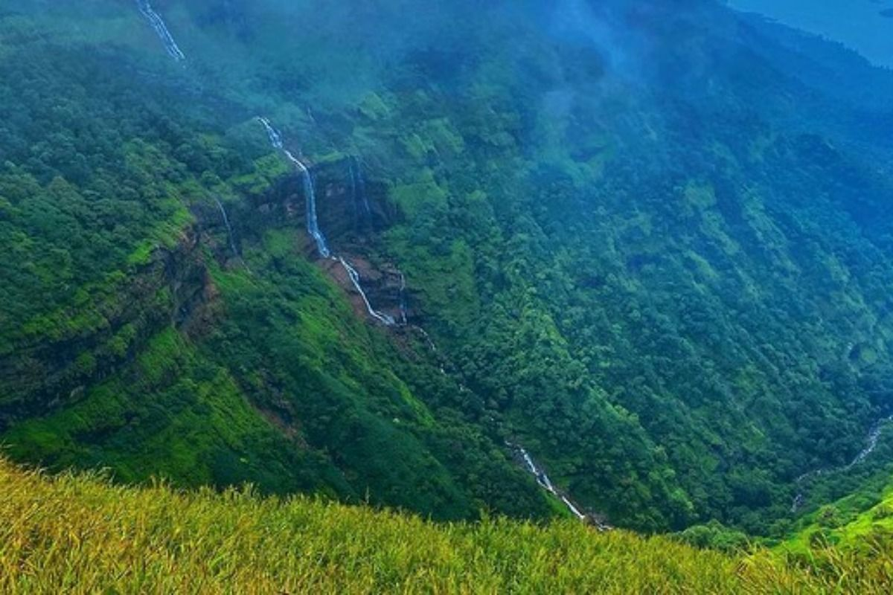
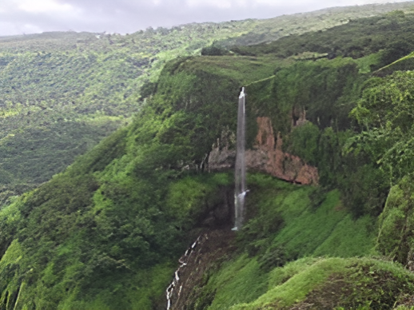
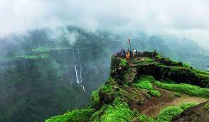
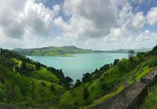
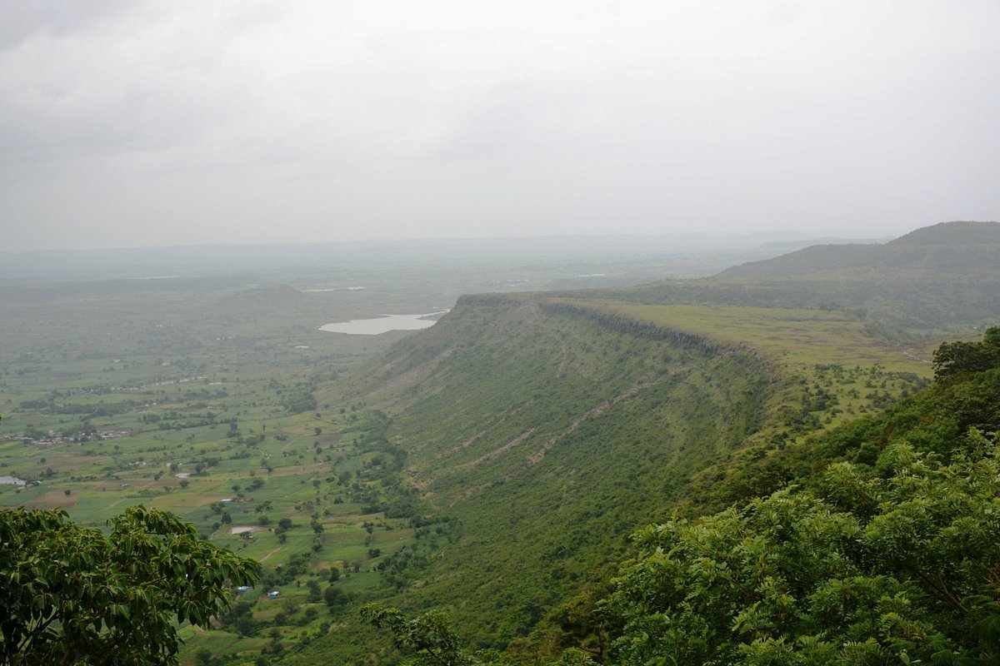
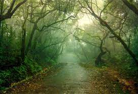

Matheran
Located on the Matheran plateau in the Western Ghats, Matheran is a unique
hill station known for being car-free. Tourists can explore the hill station on foot, by rickshaw,
or by riding the Matheran Hill Railway, a U NESCO World Heritage Site. Popular attractions include
Echo Point, Monkey Point, and Louisa Point, which offer stunning views of the surrounding valleys.

Mahabaleshwar
Often referred to as the "Queen of Hill Stations," Mahabaleshwar is
situated in the Satara district and is known for its stunning landscapes, pleasant climate, and
historical significance. Popular activities here include boating on Venna Lake, exploring ancient
temples, and enjoying scenic viewpoints like Arthur's Seat and Echo Point.

Lonavala
A popular weekend getaway destination from Mumbai and Pune, Lonavala is
known for its scenic beauty, waterfalls, and caves. Tourists can enjoy trekking, paragliding, and
exploring historical landmarks like the Karla Caves and the Bhushi Dam. During the monsoons, the
hills turn lush green, making it an especially picturesque sight.

Igatpuri
Located in the Western Ghats, Igatpuri is known for its waterfalls, lush
greenery, and serene atmosphere. Tourists can enjoy trekking to Tringalwadi Fort, visiting the
Vipassana Meditation Center, and exploring the Tungareshwar Caves. During the monsoons, the
waterfalls come alive, making it a popular destination for nature lovers.

Mhaismal
Mhaismal, nestled in the picturesque Aurangabad District of Maharashtra, India, is a charming hill station renowned for its serene beauty and tranquil ambiance. Situated at an elevation of 1067 meters, Mhaismal offers a refreshing escape from the hustle and bustle of city life. Located just 12 kilometers from Khuldabad and approximately 40 kilometers from Aurangabad City, it boasts convenient accessibility for visitors seeking a peaceful retreat.

Panchagani
Nicknamed the "Table Land," Panchgani is a hill station situated in the
Satara district. It's known for its pleasant climate, scenic beauty, and strawberry farms. Tourists
can enjoy activities like boating on the Dhom Dam, horse riding, and visiting historical landmarks
like Parsi Point and Wai.